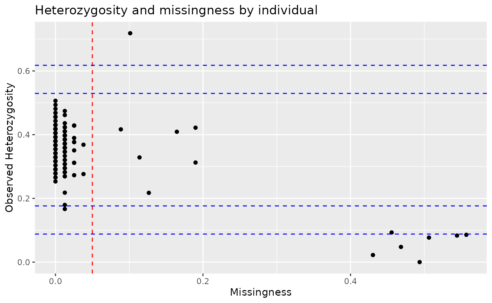
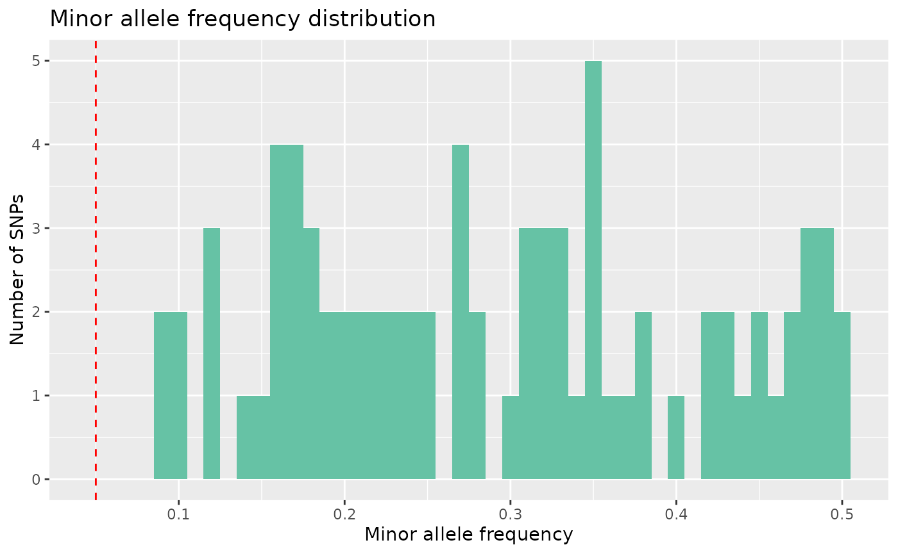
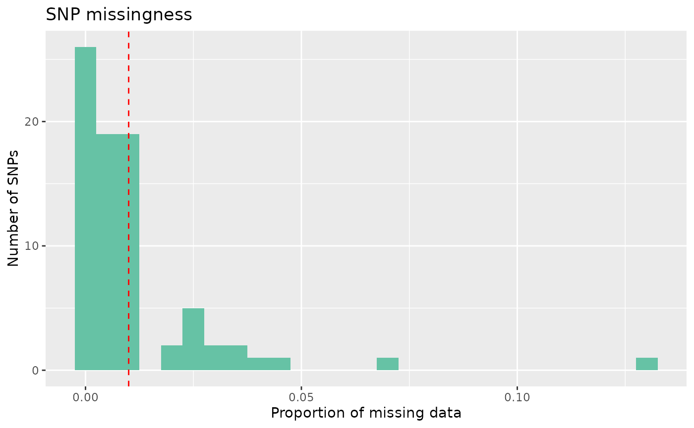
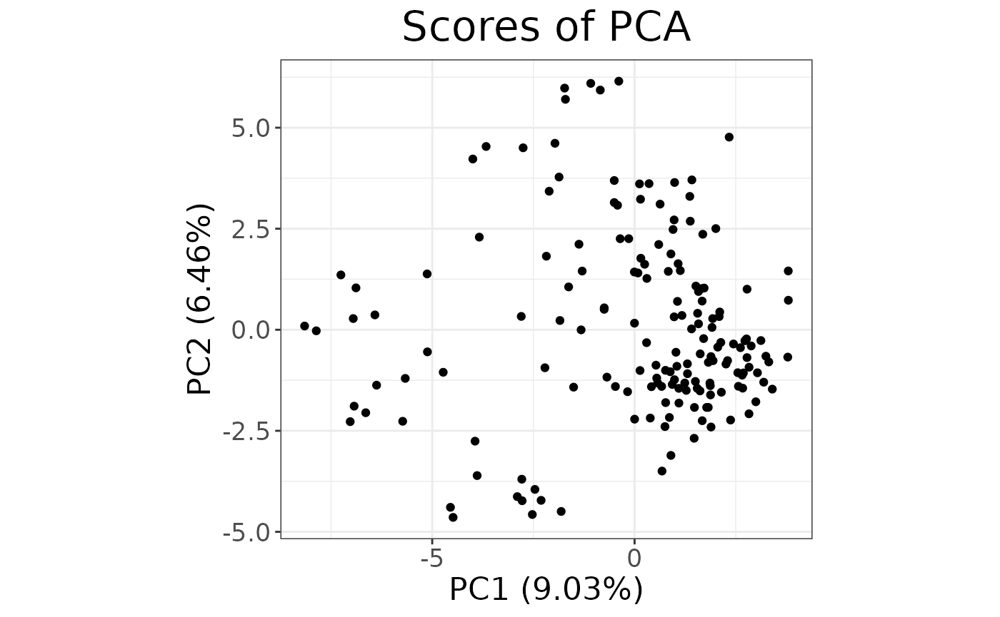
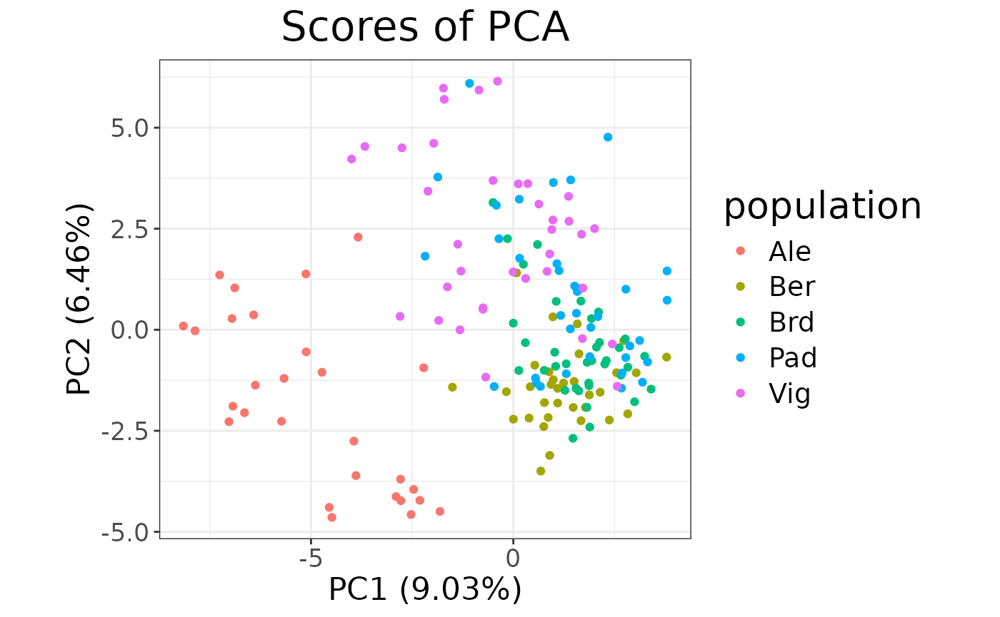
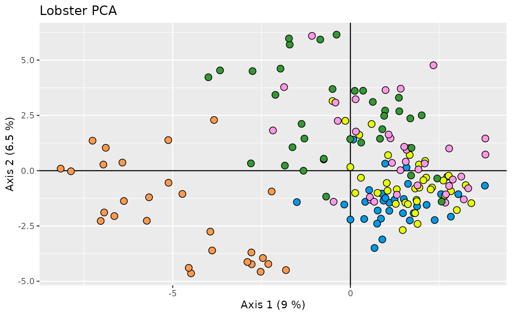
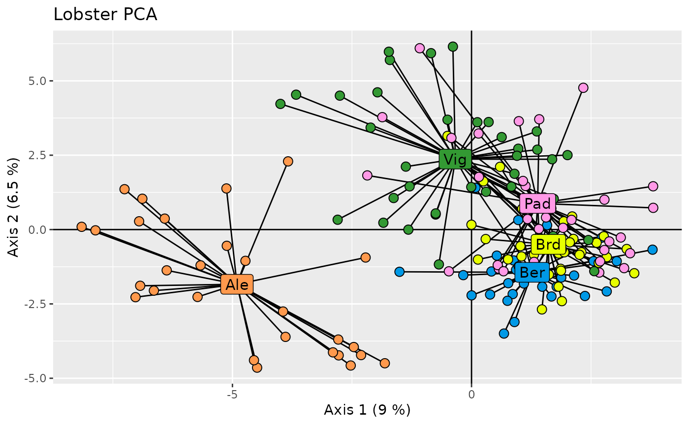

This vignette gives a short introduction on how to use the
tidypopgen package to perform basic data cleaning and a PCA
on a dataset of European lobsters (Homarus gammarus). The
original data are available at https://datadryad.org/dataset/doi:10.5061/dryad.2v1kr38,
but for the purpose of this vignette we will use a subset of the data
stored as a .bed file, available in the
inst/extdata/lobster directory of the package. To install
tidypopgen from r-universe, use:
install.packages("tidypopgen", repos = "https://evolecolgroup.r-universe.dev")Next, load the tidypopgen package and the
ggplot2 package for plotting.
## Loading required package: dplyr##
## Attaching package: 'dplyr'## The following objects are masked from 'package:stats':
##
## filter, lag## The following objects are masked from 'package:base':
##
## intersect, setdiff, setequal, union## Loading required package: tibbleCreating a gen_tibble
In tidypopgen, we represent data as a
gen_tibble, a subclass of tibble containing
the columns id and genotypes for each
individual. Genotypes are stored in a compressed format as a File-Backed
Matrix that can be easily accessed by functions in
tidypopgen, therefore the genotypes column is
simply a vector giving the row indices of each individual in the
File-Backed Matrix.
Additionally, if data are loaded from a .bed file with information in
the FID column, this is treated as population information
and is automatically added to the gen_tibble as column
population. As with a normal tibble, this information can
be changed, updated, or removed from the gen_tibble if
needed. tidypopgen can also read data form
packedancestry files and vcf.
Let’s start by creating a gen_tibble from the
lobster.bed file.
lobsters <- gen_tibble(
x = system.file("extdata/lobster/lobster.bed", package = "tidypopgen"),
quiet = TRUE, backingfile = tempfile()
)
head(lobsters)## # A gen_tibble: 79 loci
## # A tibble: 6 × 3
## id population genotypes
## <chr> <chr> <vctr_SNP>
## 1 Ale04 Ale 1
## 2 Ale05 Ale 2
## 3 Ale06 Ale 3
## 4 Ale08 Ale 4
## 5 Ale13 Ale 5
## 6 Ale15 Ale 6We can see the structure of the gen_tibble above, with
the expected columns. In this case, our .bed file contains population
information corresponding to the sampling site of each lobster in the
dataset.
If we want to take a look at the genotypes of our lobsters, we can
use the show_genotypes function to return a matrix of
genotypes, where rows are individuals and columns are loci. This is a
big table, so we will just look at the first ten loci for the first 5
individuals:
lobsters %>% show_genotypes(indiv_indices = 1:5, loci_indices = 1:10)## [,1] [,2] [,3] [,4] [,5] [,6] [,7] [,8] [,9] [,10]
## [1,] 0 NA NA NA 2 NA NA NA 0 NA
## [2,] 1 0 1 2 1 1 0 1 1 1
## [3,] NA 0 0 NA 2 2 NA NA 0 2
## [4,] NA 2 0 2 NA NA NA NA 1 NA
## [5,] 0 NA 0 NA 2 NA 0 NA NA NAAnd, similarly, if we want to see information about the loci we can
use the show_loci function, which returns a tibble with
information about each locus. Again this is a big table, so we will use
head() to only look at the first few:
## # A tibble: 6 × 8
## big_index name chromosome position genetic_dist allele_ref allele_alt chr_int
## <int> <int> <chr> <int> <int> <chr> <chr> <int>
## 1 1 3441 1 1 1 G A 1
## 2 2 4173 2 2 2 C T 2
## 3 3 6157 3 3 3 G C 3
## 4 4 7502 4 4 4 C T 4
## 5 5 7892 5 5 5 A T 5
## 6 6 9441 7 7 7 A G 7Now we have a gen_tibble to work with, we can start to
clean the data.
Quality control
Let’s start by checking the quality of the data for each individual
lobster in our dataset. We can use the qc_report_indiv
function to generate a report which contains information about
missingness and heterozygosity for each individual.
indiv_qc_lobsters <- lobsters %>% qc_report_indiv()We can take a look at this data using the autoplot
function:
autoplot(indiv_qc_lobsters, type = "scatter")
We can see that most individuals have low missingness and
heterozygosity, but there are a few individuals missing >20% of their
genotypes. We can remove these individuals using the filter
function, specifying to keep only individuals with missingness under
20%.
lobsters <- lobsters %>% filter(indiv_missingness(genotypes) < 0.2)Now lets check our loci. We can use the qc_report_loci
function to generate a report of the loci quality. This function will
return another qc_report object, which contains information
about missingness, minor allele frequency, and Hardy-Weinberg
Equilibrium for each locus.
loci_qc_lobsters <- lobsters %>% qc_report_loci()## This gen_tibble is not grouped. For Hardy-Weinberg equilibrium, `qc_report_loci()` will assume individuals are part of the same population and HWE test p-values will be calculated across all individuals. If you wish to calculate HWE p-values within populations or groups, please use`group_by()` before calling `qc_report_loci()`.Here, we get a message because the qc_report_loci
function calculates Hardy-Weinberg equilibrium assuming that all
individuals are part of a single population. As our dataset contains
multiple lobster populations, we should group our data by population
first:
lobsters <- lobsters %>% group_by(population)
loci_qc_lobsters <- lobsters %>% qc_report_loci()That’s better. Now, lets take a look at minor allele frequency for all loci:
autoplot(loci_qc_lobsters, type = "maf")
And we can see that we don’t have any monomorphic SNPs.
Now let’s look at missingness.
autoplot(loci_qc_lobsters, type = "missing") Our data mostly have low missingness, but we can see that some loci have > 5% missingness across individuals, and we want to remove these individuals.
In tidypopgen, there are two functions to subset the loci in a
gen_tibble object: select_loci and
select_loci_if. The function select_loci
operates on information about the loci (e.g filtering by chromosome or
by rsID), while select_loci_if operates on the genotypes at
those loci (e.g filtering by minor allele frequency or missingness). In
this case, we want to remove loci with >5% missingness, so we can use
select_loci_if with the loci_missingness
function, operating on the genotypes column of our
gen_tibble.
lobsters <- lobsters %>% select_loci_if(loci_missingness(genotypes) < 0.05)Through our filtering, we have removed a few individuals and loci. We
should now update the file backing matrix to reflect these changes,
using the function gt_update_backingfile:
lobsters <- gt_update_backingfile(lobsters, backingfile = tempfile())##
## gen_backing files updated, now## using bigSNP file: /tmp/RtmpNnVbGd/file2d857cd43efd.rds## with backing file: /tmp/RtmpNnVbGd/file2d857cd43efd.bk## make sure that you do NOT delete those files!Now our data are clean and the backingfile is updated, we are ready to create a PCA.
Impute
First, we need to impute any remaining missing data using the
gt_impute_simple function.
lobsters <- gt_impute_simple(lobsters, method = "random")PCA
Then we can run a PCA. There are a number of PCA algorithms, here, we
will use the gt_pca_partialSVD function:
partial_pca <- gt_pca_partialSVD(lobsters)And we can create a simple plot using autoplot:
autoplot(partial_pca, type = "scores")
That was easy! The autoplot gives us a quick idea of the
explained variance and rough distribution of the samples, but we need to
see the different populations within our dataset.
For a quick overview, we could add an aesthetic to our plot:
autoplot(partial_pca, type = "scores") +
aes(color = lobsters$population) +
labs(color = "population")
However, if we want to fully customise our plot, we can wrangle the
data directly and use ggplot2.
Plot with ggplot2
For a customised plot, we can extract the information on the scores
of each individual using the augment method for
gt_pca.
pcs <- augment(x = partial_pca, data = lobsters)Then we can extract the eigenvalues for each principal component with
the tidy function, using the “eigenvalues” argument:
eigenvalues <- tidy(partial_pca, "eigenvalues")
xlab <- paste("Axis 1 (", round(eigenvalues[1, 3], 1), " %)",
sep = ""
)
ylab <- paste("Axis 2 (", round(eigenvalues[2, 3], 1), " %)",
sep = ""
)And finally plot:
ggplot(data = pcs, aes(x = .fittedPC1, y = .fittedPC2)) +
geom_hline(yintercept = 0) +
geom_vline(xintercept = 0) +
geom_point(aes(fill = population),
shape = 21, size = 3, show.legend = FALSE
) +
scale_fill_distruct() +
labs(x = xlab, y = ylab) +
ggtitle("Lobster PCA")
Or we could create a labelled version of our PCA by determining the centre of each group to place the labels
# Calculate centre for each population
centroid <- aggregate(cbind(.fittedPC1, .fittedPC2, .fittedPC3) ~ population,
data = pcs, FUN = mean
)
# Add these coordinates to our augmented pca object
pcs <- left_join(pcs, centroid, by = "population", suffix = c("", ".cen"))And then add labels to the plot:
ggplot(data = pcs, aes(x = .fittedPC1, y = .fittedPC2)) +
geom_hline(yintercept = 0) +
geom_vline(xintercept = 0) +
geom_segment(aes(xend = .fittedPC1.cen, yend = .fittedPC2.cen),
show.legend = FALSE
) +
geom_point(aes(fill = population),
shape = 21, size = 3, show.legend = FALSE
) +
geom_label(
data = centroid,
aes(label = population, fill = population),
size = 4, show.legend = FALSE
) +
scale_fill_distruct() +
labs(x = xlab, y = ylab) +
ggtitle("Lobster PCA")
That’s it! There are more functions to run different types of
analyses (DAPC, ADMIXTURE, f statistics with admixtools2, etc.); each
resulting object has autoplot, tidy, and
augment to explore the results and integrated into the
information from the gen_tibble.